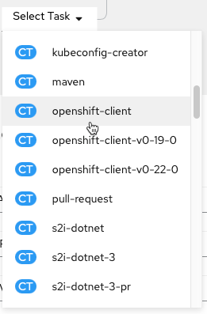
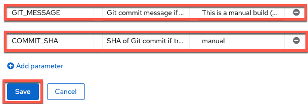
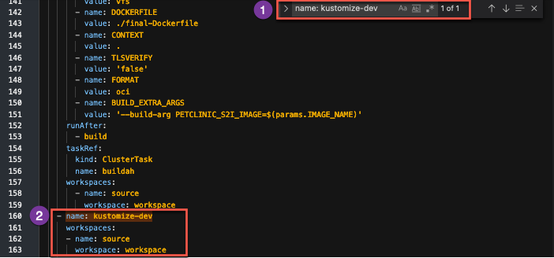
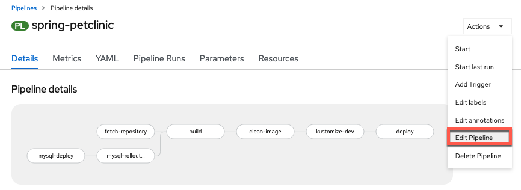
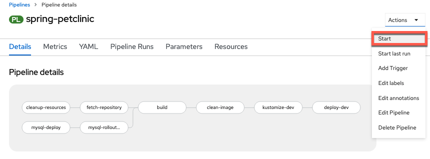

PetClinic + OpenShift Pipelines = CI¶
Now that PetClinic is up and running on your OpenShift cluster, it's time to add functionality to your pipeline to achieve basic continuous integration. The OpenShift pipeline you created in the PetClinic Up and Running uses Tekton to run a series of tasks (each with one or more steps) to accomplish a workflow (pipeline). You will use the Pipeline Builder UI built into OpenShift to quickly and easily craft a pipeline for your project.
Why OpenShift Pipelines?
-
Portable: OpenShift resources defined via yaml files -> portable across OpenShift clusters
-
Low Resource Usage: Containers spin up when triggered -> resources only used when needed
-
Configurable: Can tailor overall pipeline and individual tasks to needs of your enterprise/organization
-
Ease of Use: Pipeline Builder UI and built-in cluster resources (i.e.
ClusterTasks, ClusterTriggerBindings`, etc.) enable you to easily create a pipeline and export the yaml files with minimal knowledge
PetClinic Pipeline¶
When you deployed the PetClinic application using the From Git option in the PetClinic Up and Running section, you chose to create a basic pipeline. You'll start with this pipeline and edit it to add new functionality for your use case.
Navigate to the Pipelines tab in the Developer perspective on the left and then click the three dots to the right of the pipeline name (spring-petclinic) and choose Edit Pipeline. 
Ensure MySQL Database Deployed for each Run¶
This will bring you to the Pipeline Builder UI where you can edit your pipeline. Here you will make sure the MySQL database is configured according to your specification before the build task.
-
Add a
mysql-deploytask in parallel to thegit-fetchtask.
Why MySQL Parallel?
This ensures MySQL is in place for each
PetClinicapplication build (which would fail without it).Click
Select Taskin the middle of the rectangle of the new task and choose theopenshift-clienttask from the dropdown menu.
Click on the middle of the oval of the
openshift-clienttask to enter values for it.
Tip
Once you add a specific task (i.e. openshift-client), clicking on the oval of the task will enable you to edit its default values for your needs.
Enter the following command into the script field to ensure the MySQL database is available with the necessary configuration:
oc process openshift//mysql-ephemeral -p MYSQL_USER=petclinic -p MYSQL_PASSWORD=petclinic -p MYSQL_ROOT_PASSWORD=petclinic -p MYSQL_DATABASE=petclinic | oc apply -f -
Simply Click Away
Once you have entered the string into the
SCRIPTsection, just click away (i.e. on a regular section of the page) to get the configuration menu to go away and keep the new value(s) you just entered for the task.What is
oc processdoing?oc processis processing the OpenShift template for themysql-ephemeraldatabase with the parameters given via a series of-parguments and finallyoc apply -f -ensures that any missing components will be recreated.No help please!
Make sure
helpis deleted from theARGSsection (it will be greyed out once deleted) or bad things will happen (i.e. the help screen will come up instead of the proper command running). -
Add a
mysql-rollout-waittaskYou need to make sure that
mysqlis not only on its way to deploying but actually deployed before yourbuildtask begins. In order to achieve this, you will use the OpenShift Client again and wait for therolloutof themysqldeploymentConfigto complete after themysql-deploytask. Add a sequential task aftermysql-deploy:
Select Taskasopenshift-clientlike before and then fill out the task with the following parameters:
How did you get 3 ARGS fields?
Using
Add another valueadds another row to theARGSsection. PleaseAdd another valuetwice to have the 3 rows required for themysql-rollout-waittask as shown above.No help please!
Make sure
helpis deleted from theARGSsection (it will be greyed out once deleted) or bad things will happen (i.e. the help screen will come up instead of the proper command running).What the ARGS?
You may be wondering why you used the
SCRIPTsection in themysql-deploytask for the entire command, but now are using theARGSto individually list each argument of the command? Both work and so you are going through both methods here. On the one hand, theSCRIPTmethod is easier to copy and paste and looks the same as it would entered on the command line. On the other hand, theARGSmethod adds readability to the task. Choose whichever method you prefer, though beware of input errors with theARGSmethod for long commands. FYI: The equivalentSCRIPTcommand for themysql-rollout-waittask is:oc rollout status dc/mysql
 Now your
Now your mysql-deploy and mysql-rollout tasks will have MySQL alive and well for the build task!
Make Clean Image from S2I build¶
The s2i-java-11 image is very convenient for making an image from source code. However, the simplicity that gives it value, can make it fail at meeting the needs of many organizations by itself. In your case, you will take the artifacts from the s2i image and copy them to a new Docker image that can meet all your needs to get the best of both worlds. You'll create an optimized image starting from a compact openj9 java 11 base and employing the advanced layers feature in spring that optimizes Docker image caching with the final-Dockerfile in the ibm-wsc/spring-petclinic git repository you forked.
-
Add
BuildahtaskAdd the
buildahtask as a sequential task after thebuildtask.
-
Configure
buildahtaskTip
Each value that you need to configure is listed below with the value in a click-to-copy window (other values can be left alone to match image)

DISPLAY NAME:
clean-imageIMAGE:
$(params.IMAGE_NAME)-minimal:$(params.COMMIT_SHA)DOCKERFILE:
./final-DockerfileTLSVERIFY:
falseBUILD_EXTRA_ARGS:
--build-arg PETCLINIC_S2I_IMAGE=$(params.IMAGE_NAME) -
Add
GIT_MESSAGE, andCOMMIT_SHAparameters to the pipelineClick
Add Parametertwice ...and then fill in the parameter details for
GIT_MESSAGEandCOMMIT_SHA(copy and paste boxes below image)
GIT_MESSAGE
GIT_MESSAGEParameter Name:GIT_MESSAGEGIT_MESSAGEParameter Description:Git commit message if triggered by Git, otherwise it's a manual buildGIT_MESSAGEParameter Default ValueThis is a manual build (not triggered by Git)COMMIT_SHA
COMMIT_SHAParameter Name:COMMIT_SHACOMMIT_SHAParameter Description:SHA of Git commit if triggered by Git, otherwise just update manual tagCOMMIT_SHAParameter Default Value:manualTip
Save parameters when done with entry by clicking on blue
SAVEbox before moving onto step 4. If blueSAVEbox doesn't appear (is greyed out) delete extra blank parameters you may have accidentally added with the-. -
Add workspace to
clean-imagetaskSave current pipeline edit and switch to
YAMLfrom pipeline menu.
Why are you editing yaml directly?
Workspacesare more versatile than traditionalPipelineResourceswhich is why you are using them. However, as the transition to workspaces continues, the OpenShift Pipeline Builder doesn't support editing theWorkspacemapping from a pipeline to a task via the Builder UI so you have to do it directly in the yaml for now.Find the
clean-image-taskand add the following workspace definition:workspaces: - name: source workspace: workspace
Save the update

Note
After the save message above appears you can then proceed to
Cancelback to the pipeline menu.
Manage resource across environments with Kustomize¶
Kustomize is a tool for customizing Kubernetes resource configuration.
From the documentation overview
Kustomize traverses a Kubernetes manifest to add, remove or update configuration options without forking. It is available both as a standalone binary and as a native feature of kubectl. See the Introducing Kustomize Kubernetes Blog Post for a more in-depth overview of Kustomize and its purpose.
As part of doing things the "cloud-native way", you will be using Kustomize to manage resource changes across your dev and staging environments as well as injecting information from your pipeline (such as newly created image information with git commits) into your Kubernetes (OpenShift) resources.
To see how you use Kustomize, see the Kustomize configuration in your GitHub code in the subdirectories of the ocp-files directory
For more information on how kubectl (and oc through kubectl) integrates Kustomize, see the kubectl documentation.
Creating Custom Task for Kustomize¶
Since there is no ClusterTask defined for Kustomize, you will create a custom task for this purpose. It will change into the Kustomize directory, run a Kustomize command on the directory, and then apply the files from the directory using the built-in Kustomize functionality of the oc command line tool (via kubectl's Kustomize support)
-
Copy the
kustomizetask using the following definition (copy by clicking on the copy icon in the top right of the box below):apiVersion: tekton.dev/v1beta1 kind: Task metadata: name: kustomize spec: description: >- This task runs commands against the cluster where the task run is being executed. Kustomize is a tool for Kubernetes native configuration management. It introduces a template-free way to customize application configuration that simplifies the use of off-the-shelf applications. Now, built into kubectl as apply -k and oc as oc apply -k. params: - default: ocp-files description: The directory where the kustomization yaml file(s) reside in the git directory name: KUSTOMIZE_DIR type: string - default: base description: subdirectory of KUSTOMIZE_DIR used for extra configuration of current resources name: EDIT_SUDBDIR type: string - default: overlay/dev description: subdirectory of KUSTOMIZE_DIR used for specifying resources for a specific release such as dev or staging name: RELEASE_SUBDIR type: string - default: kustomize --help description: The Kustomize CLI command to run name: SCRIPT type: string steps: - image: 'docker.io/gmoney23/kustomize-s390x:v4.1.2' name: kustomize resources: limits: cpu: 200m memory: 200Mi requests: cpu: 200m memory: 200Mi workingDir: "$(workspaces.source.path)/$(params.KUSTOMIZE_DIR)/$(params.EDIT_SUDBDIR)" script: $(params.SCRIPT) - image: 'image-registry.openshift-image-registry.svc:5000/openshift/cli:latest' name: apply-oc-files resources: limits: cpu: 200m memory: 200Mi requests: cpu: 200m memory: 200Mi script: oc apply -k "$(workspaces.source.path)/$(params.KUSTOMIZE_DIR)/$(params.RELEASE_SUBDIR)" workspaces: - name: source description: The git source code -
Create the
kustomizeTaska. Click
Import YAMLto bring up the box where you can create Kubernetes resource definitions from yamlb. Paste the
kustomizeTask into the boxc. Scroll down and click create to create the
kustomizeTask
You should now see the created kustomize Task. Navigate back to the Pipelines section of the OpenShift UI and go back to editing your pipeline.

Add Kustomize Task to Pipeline¶
-
Add a sequential task after
clean-imageand when youSelect Taskchoose thekustomizetask.
-
Configure
kustomizetaskSince your initial deploy will be for the
devenvironment, the only values you need to change are theDisplay Nameand theSCRIPT:Display Name
kustomize-devSCRIPT
kustomize edit set image spring-petclinic=$(params.IMAGE_NAME)-minimal:$(params.COMMIT_SHA)
-
Save pipeline
-
Add workspace to
kustomize-devtaskSave current pipeline edit and switch to
YAMLfrom pipeline menu.Why are you editing yaml directly?
Workspacesare more versatile than traditionalPipelineResourceswhich is why you are using them. However, as the transition to workspaces continues, the OpenShift Pipeline Builder doesn't support editing theWorkspacemapping from a pipeline to a task via the Builder UI so you have to do it directly in the yaml for now.Find the
kustomize-devand add the following workspace definition:workspaces: - name: source workspace: workspace
Save the update
Note
After the save message above appears you can then proceed to
Cancelback to the pipeline menu.
Clean Old PetClinic Instances at the Beginning of a Run¶
-
Go back to editing your pipeline via
Actions -> Edit Pipeline
-
Add a
Tasknamedcleanup-resourcessequentially at the beginning of the pipeline beforefetch-repository(using theopenshift-clientClusterTask).
-
Configure the task with a
SCRIPTvalue of:oc delete deployment,cm,svc,route -l app=$(params.APP_NAME) --ignore-not-foundand an empty
ARGSvalue.
No help please!
Make sure
helpis deleted from theARGSsection (it will be greyed out once deleted) or bad things will happen (i.e. the help screen will come up instead of the proper command running).
Update Deploy Task to deploy-dev¶
-
Click on the
deployTask at the end of the pipeline and change the following parameters to the corresponding values (copy and paste boxes below image):
Display Name
deploy-devScript
echo "$(params.GIT_MESSAGE)" && oc $@Last Arg
From
deploy/$(params.APP_NAME)to:deploy/spring-petclinic-dev -
Saveyour pipeline!
Run the Updated Pipeline¶
-
Go to
Actions->Startin the right hand corner of the pipeline menu
-
Manually trigger a
PipelineRunby accepting the default values and clicking onStart.Persistent Volume Claim Note
Please select a
PersistentVolumeClaimif it is not already filled out for you to complete your pipeline. If it is already filled out for you then jump right to starting the pipeline.
-
Watch the results of your build pipeline run. It should complete successfully as in the pictures below.
Pipeline Run Success View Perspective:

Pipeline Run Details View
In the pipeline run
Detailsview, you can see the pipeline run succeeded with all tasks having a green check mark. Additionally, the pipeline run in the image wasTriggered Bya user versus an automated source such as an event listener watching for a GitHub push...Pipeline Run Success Logs Perspective:

Pipeline Run Logs View
In the pipeline run
Logsview, you can also see that the pipeline run tasks all have green check marks. Looking at the last task you can see this was a manual build due to yourGIT_MESSAGEvariable printing out its message in the final (deploy-dev) task.